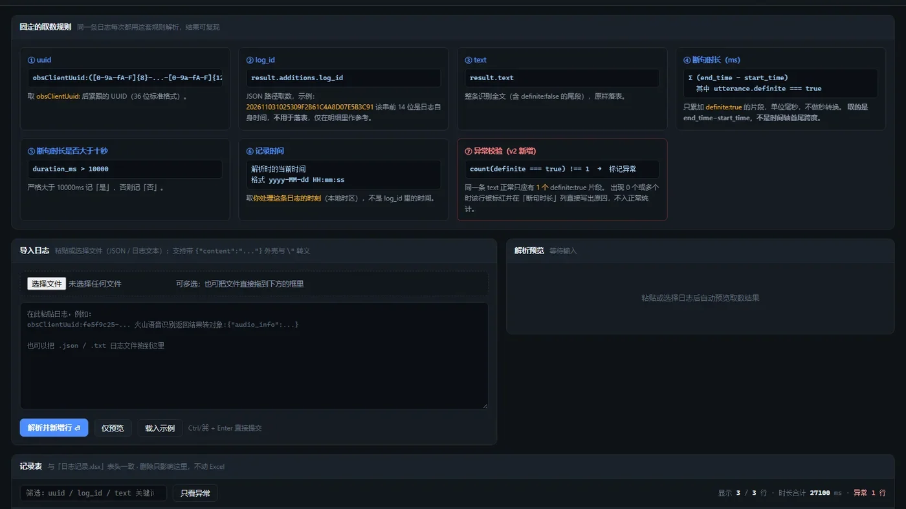

01Origin
从哪来：一次时延 badcase 分析
做华为直播合规的时延排查时，第一件事是确认“到底慢在哪”。火山云导出的是一整段原始 JSON：一条日志里嵌着上千字的识别全文加几十个时间戳片段，只有 definite: true 的那一段才是“已经定稿的断句”。
要算时长，得在几十个片段里找到那一段，做 end_time − start_time。一条手工数几分钟，一次分析动辄上万条——这不是判断工作，是重复劳动。
更麻烦的不是慢，是口径。
三个人算同一个“断句时长”，能算出三个数。
三个人算同一个“断句时长”，能算出三个数。
有人算时间轴首尾跨度，有人把全部片段加起来，有人只算 definite 那段——三个值能差几百毫秒，结论就不同。所以我做的第一件事不是选工具，而是把规则写死。
02Rules
七条规则，先定死再动手
| # | 字段 | 规则 |
|---|---|---|
| ① | uuid | 取 obsClientUuid: 后紧跟的 36 位 UUID |
| ② | log_id | 取 result.additions.log_id；前 14 位是日志时间，只作参考、不落表 |
| ③ | text | 取 result.text 全文（含未定稿尾段），原样落表 |
| ④ | 断句时长 | 只累加 definite:true 片段的 end−start，毫秒 |
| ⑤ | 是否 >10s | 严格大于 10000ms 记「是」 |
| ⑥ | 记录时间 | 处理这条日志的时刻，不是 log_id 里的时间 |
| ⑦ | 异常校验 | definite 片段数 ≠ 1 → 标红，不进正常统计 |
第 ⑦ 条是后面加的，也是最重要的一条。它把“数据本身坏了”和“业务真的超时了”分开——没有它，一批解析异常会被当成时延 badcase 混进统计，把结论整体带偏。
03The Tool
工具长什么样
单文件、零依赖、断网可用。粘日志或拖文件进去 → 实时预览取数结果 → 批量入表 → 复制成制表符文本直接贴进 Excel。下面这个就能用（示例是虚构话术，点「载入示例」换三种形态）：
↑ 可以直接操作。小屏打不开就用新窗口打开。
04Impact
它改变了什么
- 口径不可辩论。规则写在页面顶部，同一条日志谁来跑都是同一个数——这才让后面的“是不是真的超时”能讨论。
- 批量替代人工。万条级日志批量导入，秒级出表；异常行标红，可以只看异常。
- 产出直接可用。复制全表就是制表符文本，粘进 Excel 列都对得上；也能导出 JSON 给脚本继续处理。
- 顺手修了一个隐性 bug。原来的预览永远显示“否”——它读的是
over10，而解析结果里叫over10s。
7条固定规则
1天做完
秒级万条日志出表
0依赖（断网可用）
05Limits
它不做什么
它不判断业务上是不是真的超时，也不判断这是不是 badcase——它只保证“这个数是对的、可复现的”。要不要立案、要不要改参数，仍然是人来定。
这个边界很重要。工具一旦开始替人下判断，就会把“数据对不对”和“结论对不对”混在一起，而这恰恰是我在项目里最想分开的两件事。
“为什么不提需求让开发做？”
这类“一次性小工具”永远排不上期，但它卡着 badcase 分析的进度。规则固定、口径必须可复现——这种活适合自己动手，一天就能换回后面的时间。
“你怎么保证规则没写错？”
用已知答案的样例反推：取一条手算过的日志，跑出来必须是同一个数；再补两条边界（definite 为 0 个、多个），确认会被标红而不是被算进平均。